העברת העבודה לסביבת Team היא חד-כיוונית. לאחר שהתוכן עבר, לא ניתן להעביר אותו בחזרה לחשבון צרכני.
בדקו היכן נרכש Pro או Max
רכישה ישירה מ-Anthropic
המנוי מתבטל אוטומטית עם סגירת החשבון ומתקבל החזר יחסי על זמן שלא נוצל.
Google Play
המנוי מתבטל אוטומטית אך ממשיך עד סוף תקופת החיוב, ללא החזר יחסי. כדי להימנע מתשלום על זמן שלא ניתן יהיה לנצל, בטלו דרך Google Play לפני ההגירה.
Apple App Store
Anthropic אינה יכולה לבטל את המנוי. בטלו דרך Apple ID לפני ההגירה. כל עוד המנוי פעיל, Keep both accounts עשויה להיות האפשרות היחידה.
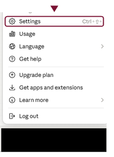
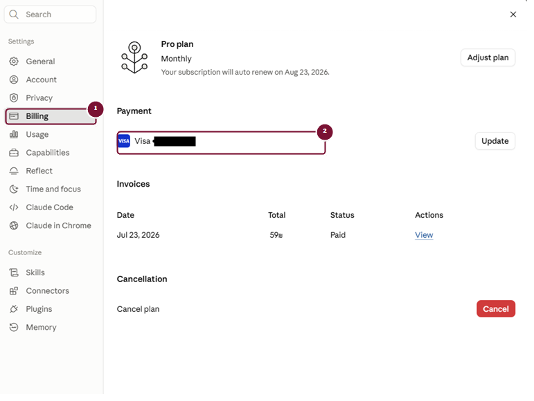
Billing - מקור הרכישה" width="771" height="580" loading="lazy" decoding="async">- 1לשונית Billing.
- 2אמצעי התשלום - מעיד על מקור הרכישה (Pro או Max).
בדיקת מוכנות
אל תתחילו עד ש:
- Export נמצא במחשב.
- גיבויי SkillSafe נמצאים במחשב.
- Published Artifacts וקישורי שיתוף חשובים נשמרו בדרך אחרת.
- רשימת Connected apps ו-Custom Connectors תועדה.
- המשרד מבין שהחשבון הצרכני ייסגר.
התחילו מתוך Team
לחצו על תפריט החשבון ובחרו את סביבת הארגון.
המסלול הוא:
Team > Settings > Account > Close your personal account
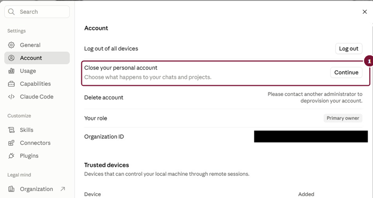
Account - שורת Close your personal account" width="761" height="404" loading="lazy" decoding="async">- 1Close your personal account - לחיצה על Continue מתחילה את התהליך.
אם אתם נמצאים ב-Personal, הכפתור עשוי שלא להופיע.
שתי אפשרויות שונות
Bring your data with you
המידע הנתמך עובר ל-Team והחשבון הצרכני נסגר.
Start Fresh או Delete your data
החשבון נסגר ללא העברת התוכן.
מי שרוצה לשמור את השיחות, הפרויקטים והקבצים בתוך Team בוחר:
Bring your data with you
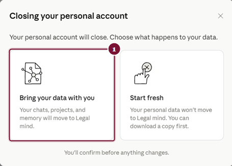
- 1Bring your data with you - השיחות, הפרויקטים והזיכרון עוברים ל-Team.
מה עובר כיום
לפי התיעוד העדכני של Anthropic:
- Chats
- Artifacts בתוך שיחות.
- Projects, Project instructions וקבצי Project.
- פרויקטים שנוצרו או שימשו ב-Cowork.
- Uploaded files and attachments
- Tasks
- Project sync configurations
- Memory, אם הארגון לא כיבה אותה.
- חלק מהגדרות Claude Code, בכפוף להגדרות שכבר קיימות בארגון.
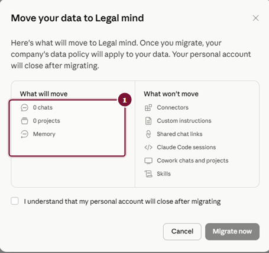
- 1רשימת What will move במסך ההעברה בפועל.
מה אינו עובר
- Custom Skills
- התחברויות לאפליקציות ולשירותים.
- Custom Connectors שהמשתמש הוסיף.
- Published Artifacts
- קישורי שיתוף ציבוריים.
- הזמנות שיתוף ממתינות.
- Cowork tasks והיסטוריית session.
- מידע מקומי ש-Cowork שמר במחשב.
- Claude Code cloud sessions
קראו וצילמו את הרשימה שמופיעה בחשבון שלכם. הממשק והתיעוד עשויים להשתנות.
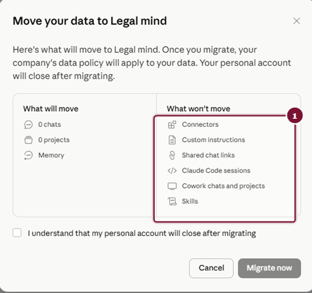
- 1רשימת What won't move במסך ההעברה בפועל.
האישור הסופי
לפני סימון התיבה ודאו:
- Export הורד.
- Skills גובו.
- אתם מבינים שהחשבון הצרכני ייסגר.
- אתם מבינים שלא ניתן להעביר את המידע בחזרה.
רק אז לחצו:
Migrate now
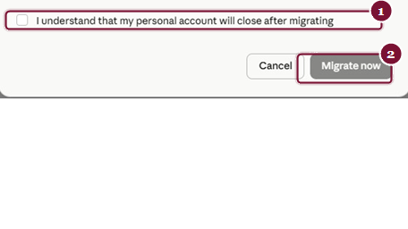
- 1תיבת האישור - יש לסמן אותה לפני שממשיכים.
- 2Migrate now - הפעולה הסופית, בלתי הפיכה.
לאחר ההגירה
התחברו מחדש באמצעות אותה כתובת.
בדקו:
- שם הארגון מופיע.
- Personal נעלם מהתפריט.
- Projects מופיעים.
- שיחות ישנות מופיעות.
- המושב והתפקיד נכונים.
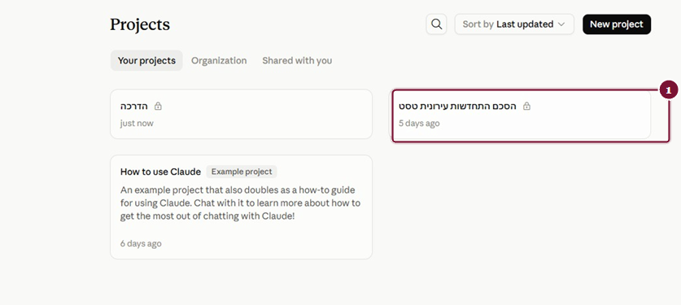
- 1הפרויקט שנוצר לפני ההגירה מופיע כעת בסביבת Team.
QA של שיחות ופרויקטים
פתחו לפחות:
- שיחה ישנה ללא קובץ.
- שיחה הכוללת מסמך.
- שיחה הכוללת תמונה.
- Project חשוב.
- Project instructions
- שיחה מתוך Your chats בפרויקט.
הופעת כותרת אינה מוכיחה שהתוכן והקבצים זמינים. פתחו אותם בפועל.
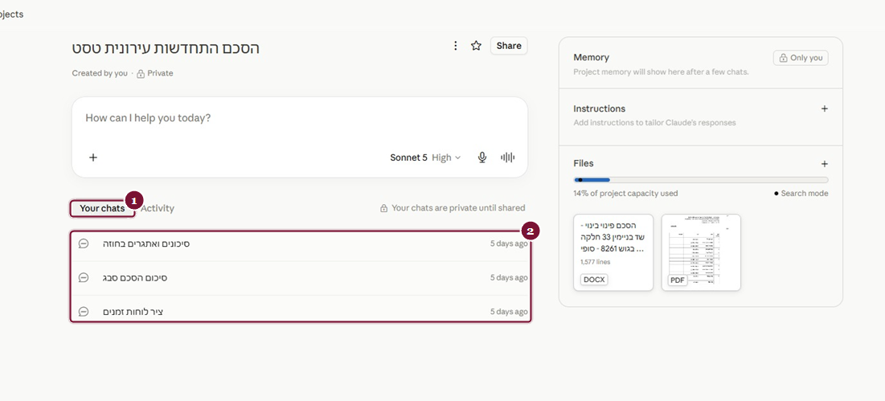
- 1לשונית Your chats בתוך ה-Project.
- 2השיחות שנוצרו לפני ההגירה מופיעות כאן.
בדיקת קבצים
עד כאן בדקתם שהשיחות והפרויקטים הגיעו. עכשיו בודקים את הקבצים עצמם, וזו בדיקה נפרדת - מהסיבה שמוסברת בתיבה שבהמשך הפרק.
שלב א: בוחרים ארבעה קבצים לבדיקה
אין צורך לעבור על הכול. בחרו קובץ אחד מכל סוג, ועדיף שיהיו מהמורכבים שיש לכם:
- מסמך Word - רצוי כזה שיש בו טבלה או הערות שוליים.
- קובץ PDF - רצוי סרוק או חתום.
- תמונה - צילום מסך או מסמך מצולם.
- קובץ כבד או ארוך במיוחד, מכל סוג שהוא.
שלב ב: מורידים ופותחים מחוץ ל-Claude
הורידו כל אחד מהם למחשב, ופתחו אותו בתוכנה שבה אתם עובדים איתו בדרך כלל: Word למסמך, קורא PDF לקובץ PDF. אל תסתפקו בתצוגה שבתוך Claude.
הניחו לצידו את הקובץ המקורי - זה שנשמר בגיבוי שהכנתם במדריך 1 - והשוו ביניהם.
שלב ג: מה בדיוק משווים
בכל קובץ עברו על שבע הנקודות האלה. הן אלה שנשברות ראשונות:
| מה בודקים | מה מחפשים |
|---|---|
| הפורמט של הקובץ | בדקו את סיומת הקובץ. האם הוא נשאר DOCX או PDF כפי שהועלה, או שהפך לקובץ טקסט מסוג MD. שימו לב: בייצוא דרך Export data מסמכים אכן חוזרים כקובצי MD ולא בפורמט המקורי, כפי שמוסבר במדריך 1. כאן אתם בודקים את ההעברה עצמה, שהיא מסלול נפרד - ולכן חשוב לבדוק ולא להניח. |
| טבלאות | האם השורות והעמודות נשמרו, או שהתוכן נמרח לשורה אחת רציפה. |
| הערות שוליים | האם הן קיימות, ואם כן - האם המספור שלהן עדיין מצביע למקום הנכון. |
| עימוד ומספור עמודים | האם מספר העמודים זהה למקור. שינוי בעימוד משנה כל הפניה לעמוד. |
| נספחים וחתימות | האם הם נמצאים בקובץ, ובעיקר בקובצי PDF סרוקים. |
| עברית ואנגלית באותו מסמך | האם שורות מעורבות התהפכו או התפרקו. |
| Track Changes | רק כאשר הוא מהותי למסמך: האם השינויים והתגובות עדיין שם. |
כאשר Claude מציג את תוכן הקובץ בתוך השיחה, הוא מציג טקסט שחולץ ממנו - ולא את הקובץ עצמו. הטקסט יכול להיראות מלא ותקין גם כאשר המסמך אינו זמין עוד בפורמט שבו העליתם אותו.
לכן ההוראה היא להוריד ולפתוח בחוץ. זו הדרך היחידה לדעת אם בידיכם מסמך עובד או רק תמליל שלו.
אל תתקנו בתוך Claude. הקובץ התקין נמצא בגיבוי שהכנתם לפני המעבר. העלו אותו מחדש מהגיבוי אל ה-Project המתאים, ורשמו את המקרה. אם הוא חוזר על עצמו בסוג מסוים של קבצים, כדאי לדעת זאת לפני שממשיכים.
זו הסיבה שמדריך 1 דורש גיבוי מלא לפני שנוגעים בכלום.
התקנת Skills מחדש
Team מאפשר להעלות Custom Skill דרך:
Customize > Skills > + > Create skill > Upload a skill
העלו את Restore ZIP שנוצר באמצעות SkillSafe.
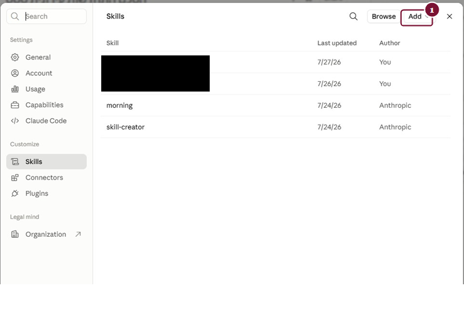
- 1Add - פותח את תפריט יצירת/העלאת Skill.
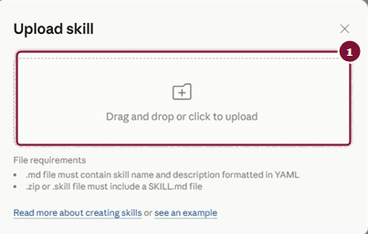
- 1גוררים לכאן, או לוחצים לבחירת קובץ, את ה-Restore ZIP שנוצר על ידי הפרומפט.
לאחר ההעלאה:
- ודאו שה-Skill מופיע.
- הפעילו אותו.
- הריצו משימת ניסיון מוכרת.
- ב-Skill מורכב בדקו פרט שנמצא ב-reference או template.
בניסוי של Legal Mind, Skill מורכב הכולל references הותקן ופעל.
הסתייגות חשובה
הגיבוי משמר את קובצי ה-Skill. OAuth, סיסמאות, API keys, הרשאות ארגוניות, Connectors ותוכנות חיצוניות עשויים לדרוש הגדרה מחדש.
חיבור שירותים מחדש
חברו מחדש רק שירותים שאושרו במדיניות המשרד. העובדה ש-Connector היה פעיל ב-Personal אינה מחייבת שהוא מותר ב-Team.
בדיקת החיוב
- ודאו ש-Pro או Max בוטל.
- בדקו Apple או Google Play בנפרד.
- בדקו את חשבונית Team.
- בדקו שאין מושבים או Pending invitations מיותרים.
מה קורה כאשר משתמש עוזב?
לפני הסרה מהארגון:
- מאתרים Projects פרטיים.
- משתפים אותם עם מי שממשיך את העבודה.
- שומרים תוצרים מקצועיים מחוץ לשיחה.
- שוקלים Export ארגוני.
לאחר הסרת משתמש, חברים אחרים אינם יכולים לגשת לשיחות שלו. נגישות Projects תלויה בהרשאות. אם אותו משתמש נוסף מחדש לאותו ארגון באותה כתובת, השיחות והפרויקטים הקודמים עשויים לחזור עבורו, בכפוף להגדרות השמירה.
צ'קליסט סיום
- Team היא הסביבה היחידה שמופיעה.
- שיחות ישנות נפתחו.
- Projects והוראותיהם נבדקו.
- קבצים הורדו והושוו למקור.
- Memory נבדקה.
- Skills הועלו ונבדקו.
- Connected apps חוברו מחדש לפי מדיניות.
- החיוב הישן הופסק.
- קיים נוהל עזיבת משתמשים.